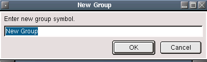

Group Panel
Description:
The group tab allows you to create, edit, rename and delete groups.
A group is simply a collection of charts defined by you. Right click
the mouse to bring up the context menu to edit the group contents.
The context menu functions are as follows:
 New Group
New Group
Here you can create a new group. Selecting this will bring up a dialog where you are asked for a name to call your new group. The name must be unique, if not an error message will display.
After entering a name, enter the new group directory and use the add
item and delete item buttons to insert or delete group contents.
 Add Group Items
Add Group Items
Displays a dialog that allows you to select charts to add to the
current group.
 Delete Group
Items
Delete Group
Items
Opens a dialog that allows you to select one or more charts to remove from the group.
Note: You can also delete one chart by pressing the Del-Key. A box will appear to confirm the removing of the currently selected chart.
Delete Group
Deletes the current group. Rename Group
Rename Group
This brings up a dialog that allows you to enter the new name of the selected group.